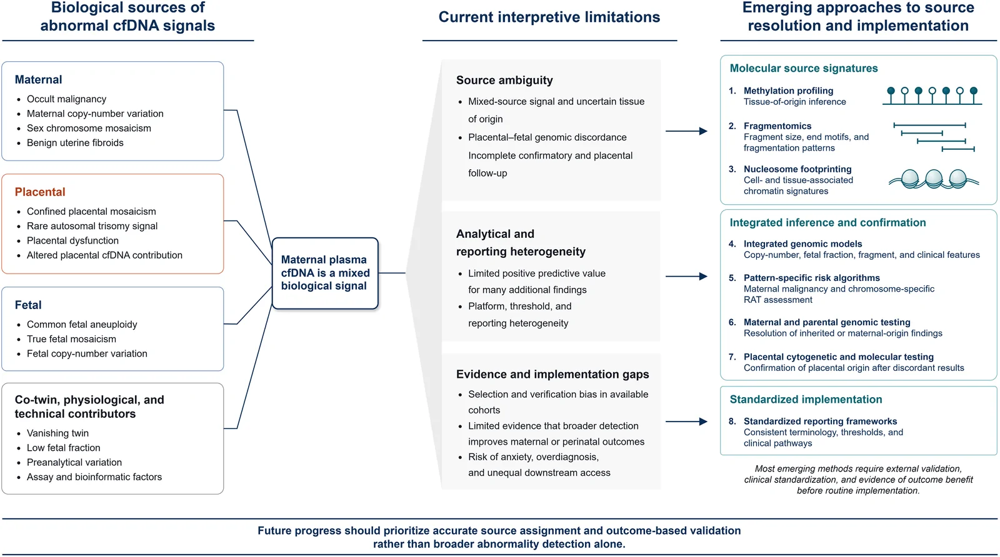
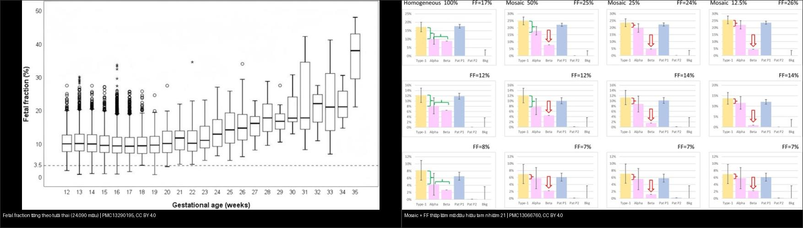
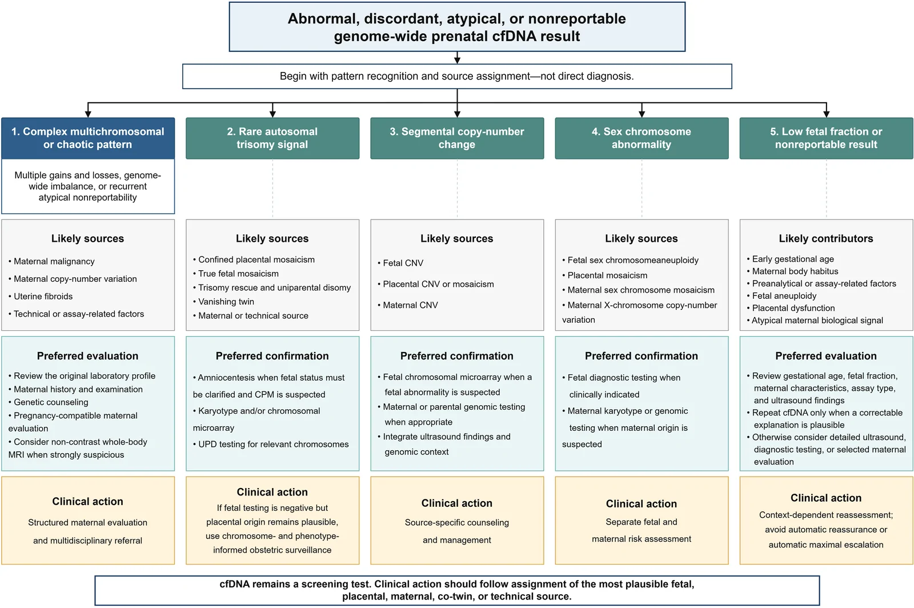
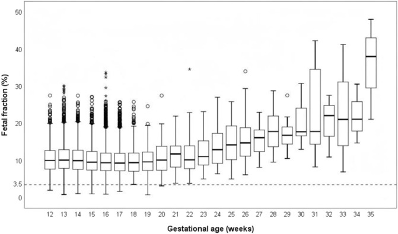
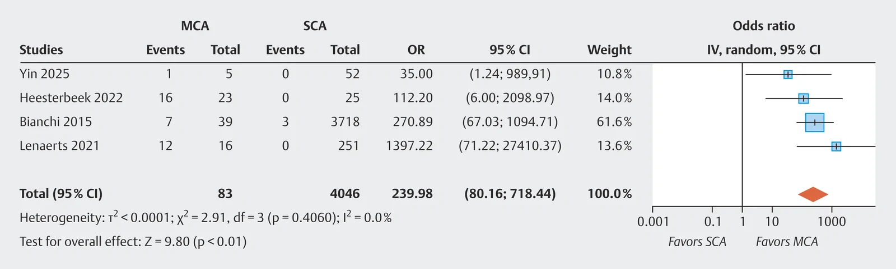
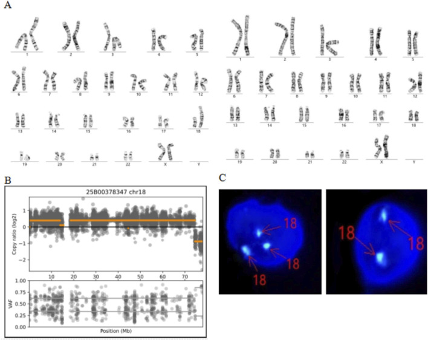

570 — Tư vấn NIPT không xác định (no-call) & dương tính giả: thai biến mất, khảm bánh nhau, ung thư mẹ / NIPT no-call & false-positive counselling
Tags: pattern:nipt-khong-xac-dinh pattern:duong-tinh-gia vung:thai-nhi protocol:NIPT protocol:MRI-toan-than protocol:choc-oi-sinh-thiet-gai-nhau
Mức chắc chắn (certainty): tổng hợp y văn (literature synthesis) — tổng hợp từ bài tổng quan "obstetric incidentalome" (Xu M et al., Int J Womens Health 2026, PMC13502226), nghiên cứu FF/SCA (Hu S et al., Front Genet 2026, PMC13290195), TRIDENT-2 thai biến mất (van Eekhout JCA et al., Ultrasound Obstet Gynecol 2025, PMC12671934), chữ ký FF (Blouin JL et al., Clin Genet 2026, PMC13066760), meta ung thư mẹ (Teixeira E et al., Geburtshilfe Frauenheilkd 2026, PMC13581417) và khảm theo mô (Huang N et al., Front Genet 2026, PMC13395340).
1. Tổng quan — vì sao một xét nghiệm "của thai" lại phản ánh mẹ, nhau và thai cùng lúc
- NIPT (non-invasive prenatal testing) đọc cfDNA tự do trong huyết tương mẹ. Điểm cốt tử: ~phần lớn cfDNA "thai" thực ra đến từ tế bào nuôi của BÁNH NHAU (trophoblast), không phải trực tiếp từ thai nhi. Do đó bộ gen bánh nhau và bộ gen thai nhi có thể KHÁC nhau → sinh ra cả dương tính giả (nhau bất thường, thai bình thường) lẫn âm tính giả. Đây là mô hình "obstetric incidentalome" — kết quả bất thường/discordant/nonreportable có thể đến từ thai, bánh nhau, mẹ, thai đã mất (co-twin) hoặc lỗi kỹ thuật (Xu M et al., Int J Womens Health 2026, PMC13502226).
- Fetal fraction (FF) là chỉ số quyết định "có trả được kết quả hay không". FF = tỉ lệ cfDNA có nguồn gốc thai/nhau. Ngưỡng tối thiểu hay dùng 3,5–4% (lab BGI dùng 3,5%). FF tăng theo tuổi thai (tương quan dương, rõ sau 20 tuần). ~1% mẫu NIPT ban đầu thất bại → "no-call", nguyên nhân hay gặp nhất là FF thấp (Hu S et al., Front Genet 2026, PMC13290195).
- FF thấp KHÔNG chỉ là chuyện kỹ thuật — nó là tín hiệu sinh học. Trong 24.101 thai: nhóm FF < 3,5% (n = 70) có tần suất bất thường nhiễm sắc thể giới tính (SCA) 11,43% so với 0,21% ở nhóm FF đủ — nguy cơ tăng ~78 lần (OR 78,2; P < 0,001), và cả 8 ca SCA trong nhóm FF thấp đều liên quan NST Y. Nhóm FF thấp cũng có BMI mẹ cao hơn (24,25 vs 21,09 kg/m²), IVF 30,0% vs 11,68%, đa thai 11,43% vs 2,92% (Hu S et al., PMC13290195).
- Xử trí no-call có chuẩn: lấy lại máu sau 2–4 tuần — trong loạt 193 ca lấy lại, 74,6% đạt FF đủ; sau 2 lần thất bại mới báo "thất bại" và chuyển chẩn đoán xâm lấn (Hu S et al., PMC13290195). Vì FF thấp có thể là "false-low" do bất thường NST Y khi dùng phương pháp đếm theo NST Y, cần đối chiếu lại bằng thuật toán khác (FF-QuantSC) + phân bố đọc NST Y trước khi kết luận thất bại.
- Dương tính giả — 5 nguồn chính: (i) khảm bánh nhau giới hạn (confined placental mosaicism — CPM); (ii) thai biến mất (vanishing twin) để lại cfDNA của thai đã mất; (iii) bất thường NST/copy-number của MẸ hoặc thể khảm NST giới tính mẹ; (iv) khối lành tính của mẹ (u xơ tử cung); (v) ung thư mẹ tiềm ẩn; cộng artifact kỹ thuật.
- Ung thư mẹ là "cờ đỏ" đặc trưng nhất: nhiều bất thường nhiễm sắc thể (multiple chromosomal aberrations — MCA) và mô hình gain–loss phức tạp rất mạnh với ung thư — OR 239,98 (95% CI 80,16–718,44) cho MCA và OR 188,64 (95% CI 34,17–1041,51) cho gain–loss phức tạp (Teixeira E et al., Geburtshilfe Frauenheilkd 2026, PMC13581417). Trong một loạt tiến cứu gồm các thai phụ được giới thiệu vì kết quả cfDNA bất thường/nonreportable, ung thư được chẩn đoán ở 52/107 người và MRI toàn thân không cản quang có độ nhạy 98,0%, độ đặc hiệu 88,5% (Xu M et al., PMC13502226).
- Âm tính giả thì hiếm nhưng có thật: ước tính ~0,65% cho lệch bội thường gặp; nguyên nhân gồm khảm theo mô và tái cấu trúc phức tạp — ví dụ ca ring NST 21, dicentric NST 18 với khảm 42% máu ngoại vi / 65% theo WES nhưng chỉ 8% trên tế bào niêm mạc miệng (Huang N et al., Front Genet 2026, PMC13395340).

Một mẫu huyết tương mẹ là hỗn hợp tín hiệu nhiều nguồn: thai dị bội, khảm bánh nhau, bất thường biến thể số lượng bản sao của mẹ (CNV), u xơ, thai biến mất, ung thư mẹ tiềm ẩn, artifact kỹ thuật. Xu M et al., Int J Womens Health 2026 (PMC13502226, Fig. 1), CC BY-NC 4.0 — nguyên bản.2. Mẫu hình + chẩn đoán phân biệt THEO PATTERN kết quả (Gamut)
Phân loại kết quả bất thường/discordant/nonreportable thành 5 pattern rồi mới truy nguồn (Xu M et al., PMC13502226):
- Pattern 1 — nhiều bất thường đa NST/chaotic (complex multichromosomal): nghĩ ngay ung thư mẹ + CNV mẹ + u xơ + artifact. Hướng: đánh giá mẹ có cấu trúc (tiền sử, khám, tư vấn di truyền, MRI toàn thân khi nghi cao).
- Pattern 2 — RAT (rare autosomal trisomy = tam nhiễm NST khác 13/18/21): CPM, thể khảm thật của thai, trisomy rescue ± dị hợp tử đơn phụ huynh (UPD), thai biến mất, khảm mẹ, artifact. Hướng: xác nhận thai bằng chọc ối (chọc ối tốt hơn sinh thiết gai nhau khi nghi CPM).
- Pattern 3 — thay đổi copy-number từng đoạn (segmental CNV): CNV thai, CNV/khảm bánh nhau, CNV mẹ. Hướng: CMA/microarray thai + xét nghiệm gen mẹ nếu cần.
- Pattern 4 — bất thường NST giới tính: SCA thai, khảm bánh nhau, khảm NST giới tính mẹ, CNV NST X mẹ. Hướng: xét nghiệm chẩn đoán thai khi có chỉ định + karyotype/genomic mẹ khi nghi nguồn mẹ.
- Pattern 5 — FF thấp/nonreportable: tuổi thai sớm, BMI mẹ, yếu tố tiền phân tích/kỹ thuật, bất thường thai, rối loạn chức năng bánh nhau, tín hiệu sinh học mẹ bất thường. Hướng: xem lại tuổi thai/FF/loại assay + siêu âm; lấy lại cfDNA chỉ khi có lý do có thể sửa được; nếu không → siêu âm chi tiết / chẩn đoán xâm lấn / đánh giá mẹ chọn lọc.
- Gợi nhớ "5 nhóm nguồn": Th – Nh – M – A – K = Thai · Nhau (CPM) · Mẹ (CNV/mosaicism/khối lành) · Ac (ung thư mẹ) · Kỹ thuật (FF thấp/artifact). Nhận đúng nguồn trước khi kết luận.
- Vanishing twin (thai biến mất): phân type I (chỉ còn túi thai rỗng) vs type II (còn phôi không sống) trên siêu âm quý I. Type II có nguy cơ nhận kết quả NIPT bất thường CAO HƠN HẲN: 12,6% vs 1,7% (P < 0,001); sau 15 tuần không còn kết quả discordant-positive (van Eekhout JCA et al., Ultrasound Obstet Gynecol 2025, PMC12671934).
3. Bảng so sánh phân biệt (ma trận đối chiếu)
| Thực thể (entity) | Kết quả NIPT điển hình | Chốt vào (rule-in) | Chốt loại (rule-out) | Gợi ý xác nhận |
|---|---|---|---|---|
| FF thấp / no-call (kỹ thuật + sinh học) | Nonreportable, FF < 3,5–4%; tăng theo tuổi thai | FF < 3,5% + BMI mẹ cao/IVF/đa thai/tuổi thai sớm; lấy lại sau 2–4 tuần 74,6% đạt FF đủ | FF đủ (≥ 4%) kèm pattern bình thường → loại no-call | Lấy lại máu sau 2–4 tuần; nếu nghi NST Y → đo lại bằng FF-QuantSC; sau 2 lần thất bại → xâm lấn |
| CPM (khảm bánh nhau giới hạn) | RAT/pattern 2 hoặc bất thường bất kỳ, khảm ≤ 10–50% | RAT + thai CMA bình thường → nguồn bánh nhau; RAT gắn thai chậm tăng trưởng | Chọc ối lặp lại đúng bất thường mức toàn thể → khảm thật của thai | Chọc ối ưu thế hơn CVS (CVS lấy bánh nhau → lặp CPM); CMA thai + siêu âm theo dõi tăng trưởng |
| Vanishing twin | Bất thường không khớp thai còn sống; dương tính giả T18/T13 nhiều | Tiền sử đa thai + siêu âm túi rỗng (type I) hoặc phôi không sống (type II) + NIPT trước 15 tuần | NIPT sau ≥ 15 tuần không còn ca discordant-positive (0/12) | Siêu âm quý I xác định type; tư vấn PPV thấp; xác nhận bằng chẩn đoán thai |
| Ung thư mẹ tiềm ẩn | Nhiều bất thường đa NST (MCA) / gain–loss phức tạp, nonreportable | MCA (OR 239,98) hoặc gain–loss phức tạp (OR 188,64) + không giải thích được bằng thai/bánh nhau | Một bất thường đơn độc, hợp với bệnh cảnh thai → ít nghĩ ung thư | Khám mẹ + xét nghiệm + MRI toàn thân không cản quang (Se 98,0%/Sp 88,5%); hội chẩn đa chuyên khoa |
| Bất thường NST/biến thể mẹ (CNV, khảm giới tính) | Pattern 3/4; bất thường "không khớp" thai | Bất thường giống mẹ trên array/karyotype mẹ | Bất thường chỉ ở thai, mẹ bình thường | Karyotype/array mẹ (máu ngoại vi); tư vấn di truyền |
| Dị bội thai THẬT (T21/T18/T13) | Nguy cơ cao T21/T18/T13; DR ~98%/FPR < 1% (đơn thai) | Nguy cơ cao + xác nhận trên chọc ối/CVS | Khảm theo mô/bánh nhau → NIPT dương tính nhưng thai bình thường | Chọc ối (karyotype/CMA); siêu âm hình thái + dấu hiệu mềm (567) |

Trái — FF tăng theo tuổi thai (24.090 mẫu): FF thấp tập trung ở tuổi thai sớm, góp phần no-call. Phải — mô phỏng khảm + FF thấp làm mờ dần "chữ ký" bất thường: khảm 50:50 đã khó nhận, FF giảm làm signal-to-noise xấu đi. Ảnh ghép letterbox giữ tỷ lệ, chỉ ghép ảnh CC BY. Hu S et al. (PMC13290195) + Blouin JL et al. (PMC13066760), CC BY 4.0.4. Protocol chụp/xét nghiệm + thuật toán xử trí
- Trước xét nghiệm (pretest counselling): NIPT là sàng lọc, không phải chẩn đoán; giải thích PPV thấp với bệnh hiếm và khả năng no-call/discordant. Làm siêu âm xác định tuổi thai + số thai + tình trạng thai trước xét nghiệm (quan trọng để phát hiện thai biến mất).
- Thời điểm: NIPT từ ≥ 10 tuần; ở thai biến mất, làm lại sau ≥ 15 tuần giúp tránh discordant-positive (0/12 ca) (van Eekhout JCA et al., PMC12671934).
- Khi no-call: (1) xem lại tuổi thai, FF, loại assay, BMI, tình trạng IVF/đa thai; (2) lấy lại máu sau 2–4 tuần; (3) nếu nghi bất thường NST Y → đo lại FF bằng FF-QuantSC + phân tích phân bố đọc NST Y; (4) sau 2 lần thất bại → báo thất bại + chọc ối/CVS + siêu âm chi tiết.
- Khi bất thường/discordant: nhận diện pattern → gán nguồn → xác nhận. Khảm/CPM nghi ngờ → chọc ối ưu thế hơn sinh thiết gai nhau. Nghi ung thư mẹ (MCA/gain–loss phức tạp) → MRI toàn thân không cản quang (tránh tia X cho thai) + hội chẩn sản khoa–di truyền–ung thư. Nghi nguồn mẹ khác → karyotype/array máu mẹ.
- Nguyên tắc vàng: "cfDNA vẫn là xét nghiệm sàng lọc; hành động y khoa phải theo nguồn (thai/nhau/mẹ/co-twin/kỹ thuật) hợp lý nhất" — tránh cả trấn an tự động lẫn leo thang tối đa tự động (Xu M et al., PMC13502226).
flowchart TD
A[Kết quả cfDNA bất thường / discordant / nonreportable] --> B[Nhận diện pattern - KHÔNG chẩn đoán ngay]
B --> C{Pattern nào?}
C -->|Nhiều bất thường đa NST / gain-loss phức tạp| D[Nghi ung thư mẹ: khám + MRI toàn thân không cản quang + hội chẩn]
C -->|RAT - tam nhiễm NST khác 13-18-21| E[Nghi CPM: choc oi + CMA thai + theo dõi tang truong]
C -->|Segmental CNV| F[CMA thai + xet nghiem gen me neu can]
C -->|Bat thuong NST gioi tinh| G[Xet nghiem chan doan thai + karyotype me neu nghi nguon me]
C -->|FF thap / nonreportable| H{Xem lai tuoi thai, FF, BMI, da thai}
H -->|Co ly do sua duoc| I[Lay lai mau sau 2-4 tuan: 74,6% dat FF du]
H -->|Nghi bat thuong NST Y| J[Do lai FF bang FF-QuantSC]
H -->|Sau 2 lan that bai| K[Choc oi/CVS + sieu am chi tiet]
D --> L[Tu van di truyen + theo doi thai]
E --> L
F --> L
G --> L
I --> L
J --> L
K --> L

Từ kết quả bất thường/discordant/nonreportable → gán 1 trong 5 pattern (đa NST/chaotic · RAT · CNV từng đoạn · NST giới tính · FF thấp) → nguồn khả dĩ → xác nhận ưu tiên → hành động lâm sàng. Đây là "bản đồ" chuẩn cho buổi tư vấn. Xu M et al., Int J Womens Health 2026 (PMC13502226, Fig. 2), CC BY-NC 4.0 — nguyên bản.5. Biến thể bình thường và cạm bẫy
- NIPT dương tính ≠ thai bị bệnh: với tam nhiễm NST hiếm/T18/T13 trong thai biến mất, PPV rất thấp — trong TRIDENT-2, không ca T18 (n = 4), T13 (n = 8) hay "additional finding" (n = 29) nào được xác nhận ở thai còn lại, trong khi T21 xác nhận 7/17 (PPV 41,2%) (van Eekhout JCA et al., PMC12671934).
- CVS có thể "lặp lại" CPM: vì CVS lấy mô bánh nhau — chính là nguồn gây bất thường cfDNA. Khi nghi CPM, chọc ối phản ánh thai nhi tốt hơn. Đây là cạm bẫy hay gặp ("xác nhận bằng CVS" → vẫn dương tính → tưởng khảm thật).
- Không được "trấn an tự động" hay "leo thang tự động": kết quả nonreportable/không điển hình cần đánh giá lại theo bối cảnh; đồng thời không MCA nào đồng nghĩa chắc chắn ung thư (u xơ, CNV mẹ cũng gây tương tự).
- FF thấp có thể là "false-low" do bất thường NST Y khi đo bằng phương pháp đếm NST Y → đừng vội kết luận thất bại, đo lại bằng thuật toán độc lập (FF-QuantSC).
- Khảm phụ thuộc MÔ: cùng một thai, máu ngoại vi khảm 42% và 65% nhưng niêm mạc miệng chỉ 8% — mức khảm khác nhau theo mô khiến NIPT có thể đồng thời dương tính giả và âm tính giả (Huang N et al., PMC13395340).
- RAT không phải lúc nào cũng vô hại: RAT/CPM gắn với thai chậm tăng trưởng và biến chứng do bánh nhau → cần theo dõi siêu âm tăng trưởng dù thai nhi bình thường về NST (Xu M et al., PMC13502226).
- Giới hạn của MRI toàn thân: Se cao 98,0% nhưng Sp 88,5% trong nhóm chọn lọc — không áp dụng để sàng lọc ung thư cho toàn bộ thai phụ; chỉ dùng theo đường dẫn tư vấn chọn lọc.
6. Tự lượng giá — Blind Quiz (ảnh trơn ngoài, đáp án trong)
Ca 1 — Thai 12 tuần, BMI mẹ 31, thụ tinh trong ống nghiệm. NIPT trả "no-call". Nhìn biểu đồ FF theo tuổi thai:

- Gợi ý lâm sàng (clinical context): thai đơn, IVF, BMI cao, tuổi thai 12 tuần.
- Câu hỏi: Vì sao FF thấp ở giai đoạn này? Bước xử trí tiếp theo là gì? Vì sao KHÔNG kết luận thất bại ngay?
Bấm để hiện đáp án (findings + chẩn đoán)
- Dấu hiệu (findings): FF tăng theo tuổi thai, thấp nhất ở tuổi thai sớm; BMI mẹ cao (24,25 vs 21,09 kg/m²), IVF, đa thai đều làm FF thấp. ~1% mẫu NIPT no-call, hay gặp nhất do FF thấp; ngưỡng FF 3,5–4%.
- Chẩn đoán/xử trí (diagnosis & management): no-call do FF thấp, chưa phải bệnh lý → lấy lại máu sau 2–4 tuần (74,6% đạt FF đủ); nếu nghi NST Y đo lại bằng FF-QuantSC; sau 2 lần thất bại → chọc ối/CVS + siêu âm chi tiết.
- Nguồn ảnh: Hu S et al., Front Genet 2026 (PMC13290195, Fig. 2), CC BY 4.0.
Ca 2 — NIPT genome-wide trả "nhiều bất thường đa nhiễm sắc thể". Nhìn forest plot:

- Gợi ý lâm sàng: thai phụ không triệu chứng, kết quả bất thường "không khớp" với thai.
- Câu hỏi: Pattern này gợi ý nguồn nào? Vì sao đây là bài toán "cờ đỏ"? Xác nhận bằng gì?
Bấm để hiện đáp án (findings + chẩn đoán)
- Dấu hiệu (findings): MCA/gain–loss phức tạp liên quan mạnh ung thư mẹ — OR 239,98 (80,16–718,44) cho MCA, OR 188,64 (34,17–1041,51) cho gain–loss phức tạp; 52/107 người được giới thiệu vì kết quả bất thường/nonreportable có ung thư.
- Chẩn đoán/xử trí (diagnosis & management): nghi ung thư mẹ tiềm ẩn → khám + xét nghiệm chọn lọc + MRI toàn thân không cản quang (Se 98,0%/Sp 88,5%) + hội chẩn đa chuyên khoa; không tự động leo thang tối đa cũng không trấn an tự động.
- Nguồn ảnh: Teixeira E et al., Geburtshilfe Frauenheilkd 2026 (PMC13581417, Fig. 3), CC BY-NC-ND 4.0 — nguyên bản.
Ca 3 — NIPT dương tính một tam nhiễm hiếm, chọc ối bình thường nhưng thai chậm tăng trưởng. Nhìn hình kết quả di truyền theo mô:

- Gợi ý lâm sàng: bất thường NIPT không khớp thai; siêu âm thấy chậm tăng trưởng.
- Câu hỏi: Vì sao NIPT bất thường mà thai bình thường? Nguồn là gì? Theo dõi gì thêm?
Bấm để hiện đáp án (findings + chẩn đoán)
- Dấu hiệu (findings): khảm thay đổi theo mô — ví dụ 42% máu ngoại vi / 65% WES nhưng chỉ 8% tế bào miệng; bảng bệnh phẩm cho thấy mức khảm khác nhau giữa nhau thai và thai.
- Chẩn đoán (diagnosis): khảm bánh nhau giới hạn (CPM)/khảm theo mô — nguồn tín hiệu cfDNA. RAT/CPM liên quan thai chậm tăng trưởng; theo dõi tăng trưởng bằng siêu âm dù CMA thai bình thường.
- Nguồn ảnh: Huang N et al., Front Genet 2026 (PMC13395340, Fig. 2), CC BY 4.0.
Ca 4 — Thai phụ có tiền sử đa thai, siêu âm còn một phôi không sống (type II). NIPT trước 15 tuần dương tính T18:
- Gợi ý lâm sàng: đa thai quý I, một phôi đã mất, tuổi thai < 15 tuần.
- Câu hỏi: Vì sao có thể dương tính giả? PPV của T18 trong bệnh cảnh này? Có nên chờ ≥ 15 tuần?
Bấm để hiện đáp án (findings + chẩn đoán)
- Dấu hiệu (findings): type II (phôi không sống) có nguy cơ bất thường NIPT 12,6% vs 1,7% so với type I; T21 xác nhận 7/17 (PPV 41,2%) nhưng T18/T13/additional finding không ca nào xác nhận; sau ≥ 15 tuần không còn discordant-positive (0/12).
- Chẩn đoán/xử trí (diagnosis & management): vanishing twin gây dương tính giả (cfDNA thai đã mất còn lưu). Tư vấn PPV thấp cho T18/T13; làm lại sau ≥ 15 tuần; xác nhận bằng chẩn đoán thai trước quyết định.
- Nguồn ảnh: van Eekhout JCA et al., Ultrasound Obstet Gynecol 2025 (PMC12671934) — dữ liệu; ảnh ghép từ PMC13290195 + PMC13066760 (CC BY).
Ca 5 — Hỏi kiến thức "nguồn gốc": kể tên 5 nguồn có thể làm cfDNA bất thường/discordant.
- Câu hỏi: Vì sao NIPT là xét nghiệm "đa nguồn" hơn là xét nghiệm "của thai"?
Bấm để hiện đáp án (findings + chẩn đoán)
- Trả lời: 5 nhóm nguồn Th–Nh–M–A–K = Thai (dị bội/khảm thật) · Nhau (CPM, RAT) · Mẹ (CNV, khảm NST giới tính, u xơ) · Ac (ung thư mẹ tiềm ẩn) · Kỹ thuật (FF thấp, artifact). Vì cfDNA "thai" chủ yếu đến từ tế bào nuôi của bánh nhau, không trực tiếp từ thai → nhau và thai có thể khác nhau.
- Hệ quả lâm sàng: luôn gán nguồn trước khi hành động; chọc ối ưu thế hơn CVS khi nghi CPM; nghi ung thư mẹ → MRI toàn thân không cản quang.
- Nguồn: Xu M et al., Int J Womens Health 2026 (PMC13502226), CC BY-NC.
Bài liên quan chéo
- 500 – Tổng quan Vú & Sản Phụ khoa (bảng DDx)
- 567 – Sàng lọc lệch bội: NIPT & dấu hiệu mềm (nền tảng sàng lọc lệch bội)
- 566 – Song thai: chorionicity, TTTS & TAPS (đa thai, màng đệm/màng ối)
- 565 – Sàng lọc hình thái thai & Doppler sản khoa (NT, hình thái, Doppler)
- 550 – Thai sớm, sẩy thai & thai ngoài tử cung (thai biến mất, sẩy thai sớm)
- 568 – TRAP & thai acardiac (một thai suy/mất trong đa thai)
Ảnh
images/570_nen-tang-cfDNA_Schema_PMC13502226-Fig1-CCBYNC.webp— nguồn cfDNA trong "obstetric incidentalome" (CC BY-NC 4.0, nguyên bản).images/570_thuat-toan-triage_Schema_PMC13502226-Fig2-CCBYNC.webp— thuật toán 5 pattern (CC BY-NC 4.0, nguyên bản).images/570_fetal-fraction-theo-tuoi-thai_PMC13290195-Fig2-CCBY.jpg— FF theo tuổi thai (CC BY 4.0).images/570_mosaic-va-fetal-fraction_PMC13066760-Fig3-CCBY.jpg— khảm + FF thấp làm mờ dấu hiệu (CC BY 4.0).images/570_forest-ung-thu-me_PMC13581417-Fig3-CCBYNCND.webp— forest plot ung thư mẹ (CC BY-NC-ND 4.0, nguyên bản).images/570_mosaic-theo-mo_PMC13395340-Fig2-CCBY.jpg— khảm khác nhau theo mô (CC BY 4.0).images/composite_570_fetal-fraction-va-mosaic.jpg— ảnh ghép FF vs khảm (chỉ ghép ảnh CC BY).- Nguồn + giấy phép đầy đủ:
images/CREDITS.md; link gốc:sources.md.
Không dùng để chẩn đoán độc lập khi chưa có người hướng dẫn.